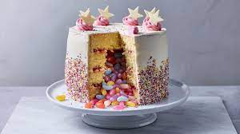

Piniata Party Cake

Description
Three, two, one... surprise!
Bring on the wow factor with this show-stopping rainbow pinata cake.
Ingredients
- 500g butter, softened
- 1 1/2 cups caster sugar
- 1 1/2 tbsp vanilla extract
- 6 eggs
- 4 2/3 cups self-raising flour
- 1 1/2 cups milk
- 2 cups assorted lollies (see Notes)
- 141.7g packet Wonka Rainbow Nerds
- 2 x 150g tubs rainbow choc chips
- 2 tbsp hundreds and thousands
Vanilla buttercream icing
- 250g butter, softened
- 2 tsp vanilla extract
- 3 cups icing sugar mixture, sifted
Steps
- Preheat oven to 180C/160C fan-forced. Grease 2 x 7cm-deep, 20cm round cake pans. Line base and sides with 2
layers of baking paper.
- Using an electric mixer, beat 1/2 the butter, 1/2 the sugar and 1/2 the vanilla for 5 minutes or until light and
fluffy. Add 3 eggs, 1 at a time, beating until just combined after each addition. Gradually beat in 1/2 the
flour and 1/2 the milk, in batches, until just combined.
- Divide mixture evenly between prepared pans. Bake for 40 minutes or until a skewer inserted into the centre of 1
cake comes out clean. Stand in pans for 10 minutes. Turn, top-side up, onto baking paper-lined wire racks. Cool
completely.
- Repeat process with remaining butter, sugar, vanilla, eggs, flour and milk, to make another 2 cakes.
- Make Vanilla buttercream icing: Using electric mixer, beat butter and vanilla for 5 to 7 minutes or until light
and fluffy. Gradually beat in sugar, 1 tablespoon at a time, until well combined.
- Trim tops of cakes so they are flat and the same thickness. Cut a 10cm round from the centre of 2 cakes (see
Notes). Remove and discard centres.
- Place 1 whole cake on a serving plate. Spread 1/4 cup of buttercream icing over top of cake. Top with 1 cut
cake. Spread 2 tablespoons icing over top of cake. Top with remaining cut cake. Spread top and inside the hole
with 1/4 cup icing. Spoon enough assorted lollies into the centre of cake to fill to the top of the hole. Top
with remaining cake. Spread remaining buttercream icing over top and side of cake.
- Combine Nerds, choc chips, and hundreds and thousands in a bowl. Press all over top and side of cake to cover.
Serve (see Notes).
Return to main page